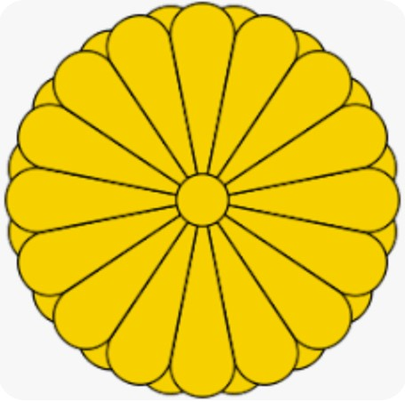
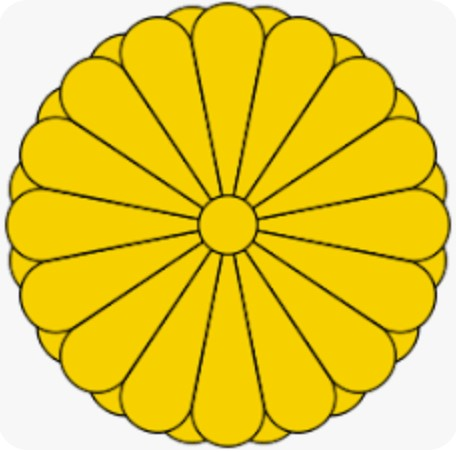
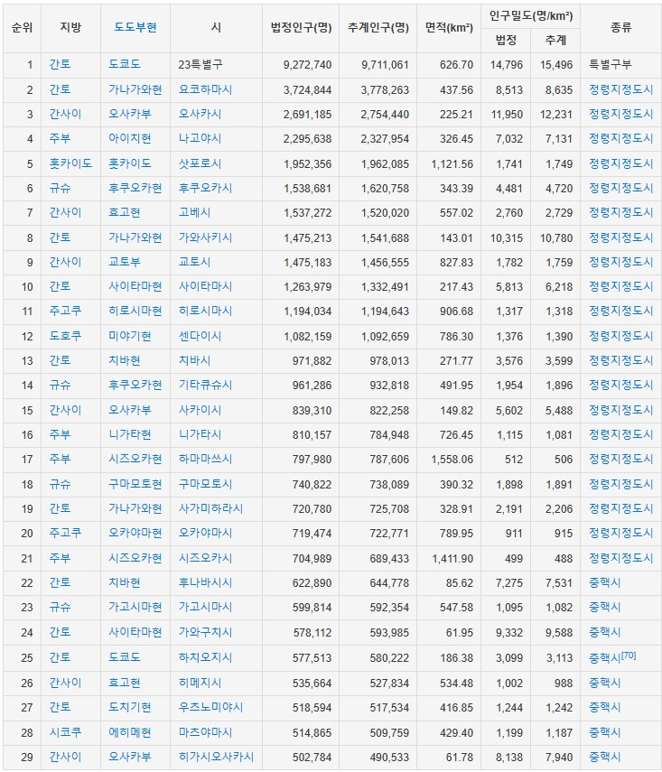

일본(日本)은 동아시아의 입헌군주국이다.
동쪽으로는 태평양, 서쪽으로는 동해에 면해 있으며 남쪽으로는 동중국해의 타이완 섬 부근에서 북쪽의 오호츠크해까지 뻗어 있는 일본 열도에 자리하고 있다.
일본 열도의 본토는 4개의 큰 섬인 혼슈, 규슈, 시코쿠, 홋카이도로 구성되어 있고, 지질학적으로는 흔히 '불의 고리'라고 알려진 환태평양 조산대에 위치해\
지진, 쓰나미, 화산 분화가 빈발하기 때문에 이에 대한 경각심과 대비가 세계에서 손꼽히는 수준이다.
인구는 약 1억 2천만 명으로 세계 12위다.
많은 인구수에 비해 국토 면적은 상대적으로 좁기에 인구 밀도가 높은 편이며, 국토의 상당부분이 산지로 이루어져 있다는 점을 고려하면 실질적인 인구 밀도는 더욱 높아진다.
수도 도쿄도는 전 세계에서 가장 인구가 많은 대도시권이며 그 인구는 1,300만 명 가량이다.
평균 수명은 84.62세로 세계 1위인 한편 여느 선진국들과 마찬가지로 수십 년간 저출산이 진행되어 왔기에 인구 감소 및 복지 부담 증가 등 인구학적 문제를 겪고 있기도 하다.
일본은 대표적인 선진국이자 강대국 중 하나다.
일본 엔은 세계 무역결제통화 비중의 15~20% 를 차지하며 대표적인 안전자산으로 평가받는 신뢰성이 높은 통화다. 이 때문에 엔화는 미국 달러, 유로와 함께 세계 3대 통화로 꼽힌다.
일본의 GDP는 세계 4위이며, PPP는 세계 4위, 금 보유고 세계 8위, 주식시장 규모 세계 3위, 대외순자산 규모 세계 1위 및 국제통화기금(IMF) 투표권은 세계 2위다.
비서양권 국가 중 유일한 G7 회원국이자 환태평양경제동반자협정(TPP) 주도국, 아시아개발은행(ADB) 설립국이며,
유네스코 예산 분담률 1위, 유엔 분담률 3위로서 전세계적으로 상당한 영향력을 미치는 국가이다.
일본의 3대 도시라고 하면 도쿄, 오사카, 나고야를, 5대 도시라고 하면 도쿄, 오사카, 나고야, 후쿠오카, 삿포로를 꼽으며,
10대 도시라고 하면 도쿄, 요코하마, 오사카, 나고야, 삿포로, 고베, 교토, 후쿠오카, 히로시마, 센다이를 꼽는다.

일본 도시의 인구 순위는 다음과 같다.
법정인구자료는 2015년 국세조사의 자료이고, 추계인구 자료는 2021년 9월 1일 기준 자료다.
인구 50만 이상의 도시들을 순위대로 기재한다.
한국과는 지리적 특성상 삼국시대부터 밀접하게 교류하였으며, 중세에 여몽연합군의 원정, 왜구 문제와 대마도 정벌, 임진왜란과 정유재란,
기유약조와 조선 통신사를 거쳐 한국 최초의 근대적 조약을 맺은 나라가 되었고, 20세기 초에는 한반도가 약 35년간 일본 제국에 의한 강점 이라는 수모를 겪었다.
양국은 현대에 들어서 동맹국인 미국을 통해 서방 세계의 일원으로 참여하였으며, 1965년 국교를 정상화한 이후 정치, 경제 및 민간 부문에서 밀접하게 교류하고 있다.
한국과 일본은 서로를 지칭할 때 '가깝고도 먼 나라 (近くて遠い国)'라는 관용어를 즐겨 쓴다.
이는 지리적으로는 가까우나, 심리적・정신적으로는 다소 긴장 관계에 있는 양국의 상황을 함축하는 말이다.
일본과 대한민국은 대한해협을 사이에 두고 매우 가까이 위치해 있으며, 최단거리는 부산광역시 사하구와 나가사키현 쓰시마시를 잇는 선으로
불과 46km밖에 되지 않는다. 예비역이라면 이 거리가 도보로도 주파 가능한 거리임을 알것이다.